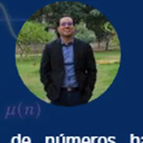
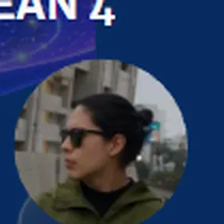
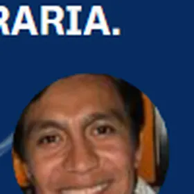

Charlas
Exposiciones sobre distintas áreas y perspectivas de la matemática.
Entre lo continuo y lo discreto, convergen las matemáticas.
En el marco de las celebraciones por los 150 años de la Universidad Nacional de Ingeniería, el Grupo Estudiantil de Matemática (GEM) presenta la primera edición de L.E.M.A. – Encuentro Académico de Matemáticas.
El encuentro nace con el propósito de reunir a estudiantes, docentes e investigadores, promoviendo el intercambio de conocimientos y la difusión de diversas áreas de las matemáticas. A través de conferencias, talleres y actividades académicas, buscamos fortalecer el interés por la investigación y contribuir al desarrollo de nuestra comunidad científica.
Exposiciones sobre distintas áreas y perspectivas de la matemática.
Sesiones académicas pensadas para aprender haciendo y profundizar ideas.
Un espacio de diálogo, intercambio de experiencias y comunidad.
Lunes virtual. Las actividades presenciales se desarrollarán en el CTIC de la UNI según el programa.
Una pausa en el programa antes de la jornada de clausura.
Conoce algunas de las exposiciones confirmadas para L.E.M.A. 2026.
Las foliaciones holomorfas singulares constituyen un punto de encuentro entre los sistemas dinámicos, la geometría compleja y la teoría de singularidades. En esta charla se presenta una familia de foliaciones nilpotentes en dimensión compleja superior que extiende de manera natural las foliaciones nilpotentes clásicas del plano complejo.
Se estudian foliaciones que poseen una conexión de tipo nilpotente de la forma normal de Takens, lo que permite describir su estructura local y explicar la aparición de hipersuperficies cuspidales como conjuntos invariantes. Esta relación pone de manifiesto una estrecha conexión entre la dinámica de las foliaciones y la geometría de las singularidades asociadas. Además, se consideran foliaciones de tipo superficies generalizadas y su caracterización mediante poliedros de Newton.
En esta charla estudiaremos cómo describir algebraicamente el grupo fundamental de una superficie de Riemann compacta a partir de una descripción geométrica de la superficie. Partiremos de la idea de representar la superficie como un recubrimiento ramificado de la esfera de Riemann.
A partir de los puntos de ramificación, construiremos primero el grupo fundamental del recubrimiento sin ramificaciones usando el método de Schreier. Después veremos cómo aparecen las relaciones necesarias para recuperar la superficie compacta y cómo estas relaciones pueden simplificarse. Finalmente llegaremos a la presentación clásica del grupo fundamental de una superficie de género g, con 2g generadores y una única relación dada por un producto de conmutadores.
En los últimos años, la teoría analítica de números ha experimentado una transformación importante hacia una matemática cada vez más explícita, donde no solo interesa demostrar un resultado, sino también obtener constantes efectivas y estimaciones numéricas precisas.
La charla ofrece una visión general de este paradigma, destacando trabajos recientes relacionados con Terence Tao, Harald Helfgott y Tim Trudgian. Se discutirán, entre otros temas, nuevas cotas explícitas para sumas parciales de las funciones de Möbius y de von Mangoldt mediante técnicas de análisis de Fourier y funciones extremales.
La hipótesis del continuo plantea que no existen cardinalidades estrictamente intermedias entre la de los números naturales y la del continuo. En esta charla se presenta una formalización en Lean 4 y Mathlib del estudio de estos tamaños intermedios bajo la negación de dicha hipótesis, construyendo subestructuras elementales de los números reales con cardinalidades intermedias.
Mediante el teorema descendente de Löwenheim–Skolem se analiza la existencia de estos estratos y la forma en que pueden organizarse en cadenas crecientes. También se estudia su relación con resultados clásicos de teoría de modelos y el papel de la cofinalidad del continuo, mostrando cómo Lean permite precisar las hipótesis necesarias, detectar afirmaciones incorrectas y verificar rigurosamente los argumentos.
La charla presenta la construcción de la P-localización para espacios nilpotentes siguiendo el enfoque clásico de J. P. May. Se introducen los prerrequisitos algebraicos —localización de grupos abelianos, grupos nilpotentes y localización de grupos— y posteriormente se trasladan estas ideas a la topología mediante la acción de π₁(X) sobre los grupos de homotopía superiores.
El núcleo de la exposición es la construcción inductiva de XP a partir de una torre de Postnikov refinada en fibraciones principales con fibras de Eilenberg–MacLane K(A,n), localizando etapa por etapa. Se ilustrarán las ideas con ejemplos como las esferas y la racionalización XQ.
Conoce a quienes formarán parte de esta primera edición.

Teoría explícita de números
Grupo fundamental y recubrimientos ramificados

Teoría de modelos y Lean 4

Foliaciones holomorfas nilpotentes
Universidad Nacional de Ingeniería
Lima, Perú